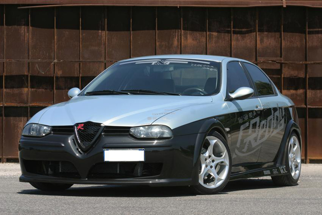
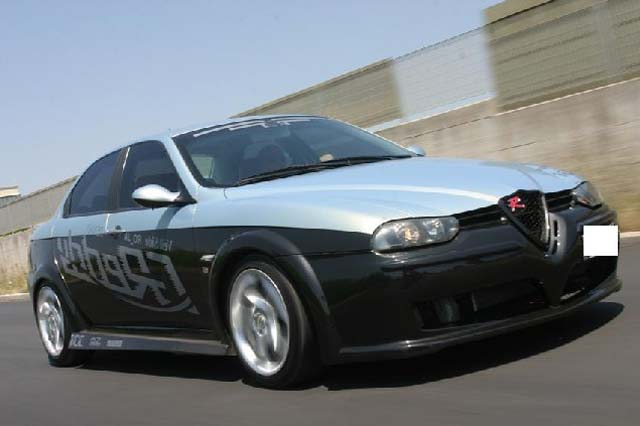
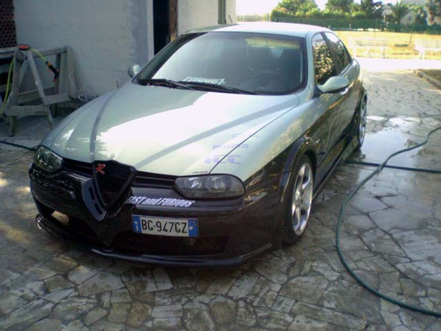
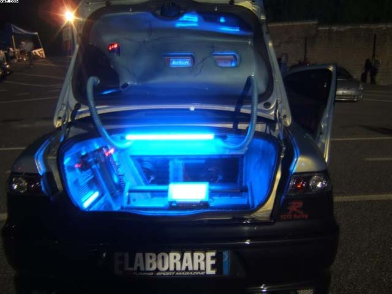
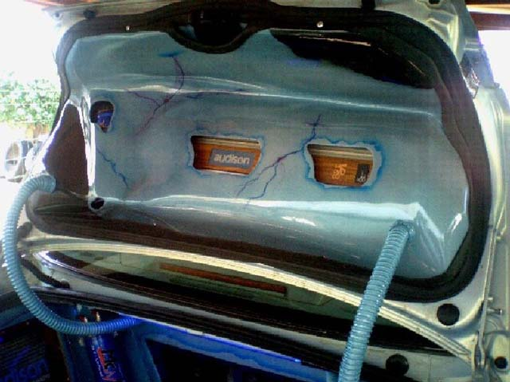
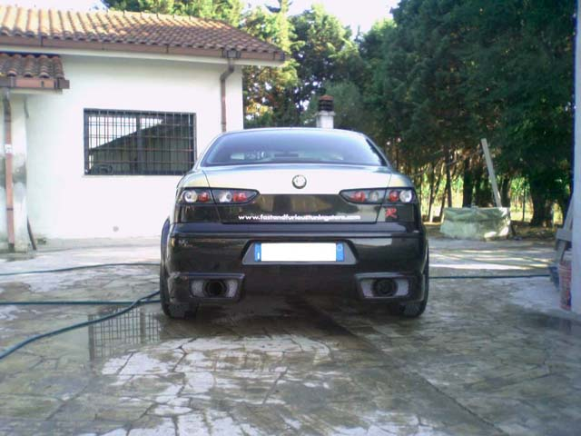
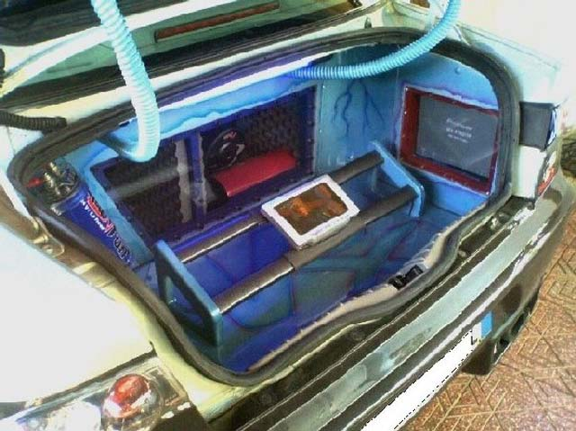
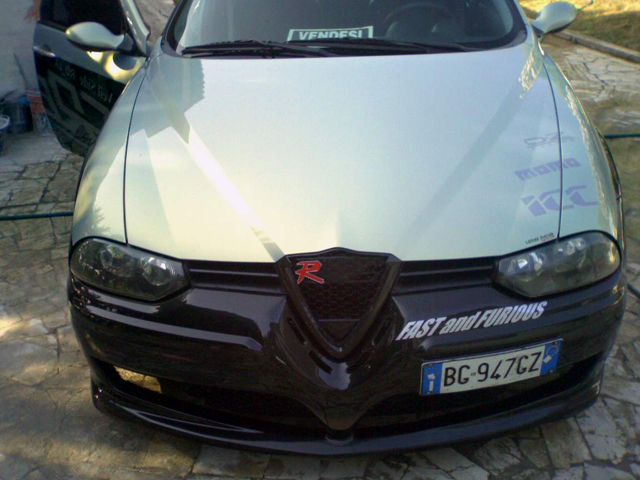
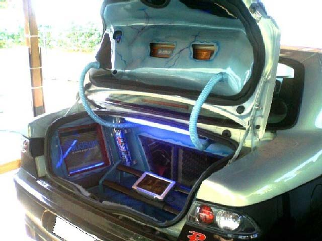

ALFA 156 1.9 JTD DI EMILIANO.
MECCANICA:
aspirazione diretta BMC,centralina rimappata,scarico artigianale,turbina lucidata e su cuscinetti,intercooler DOMORACE.
ESTETICA:
KIT ESTETICO ICC completamente integrato con la carrozzeria(allargature 3cm ant. e 5cm post.),minigonne allargate fino a 5cm,bicolore nero fuoco e azzurro nuvole,
adesivi artigianali,pellicole oscuranti,fari ant.gta,fari post.INPRO(modificati artigianalmemte),mascherina anteriore modificata,neon sottoscocca azzurro.
artigianalmente,frecce bianche.INTERNI:volante ISOTTA mod.nivola sport,freno a mano MOMO,pomello cambio MOMO mod.king,pedaliere SPARCO,sedili in pelle MOMO,spugnette MOMO
in alcantara ghiaccio,
ASSETTO:
ammortizzatori KW variante 2 con ghiera regolabili in altezza,dischi C.T.F. baffati e forati,distanziali artigianali con colonnine(2.5cm ant. 4.5cm post.),cerchi OZ mod ANTARES "17",
pneumatici michelin pilot 215/40/17ant.215/45/17post.
HI-FI:
fonte Piooner con modulo 3d-dvd-avx-7300 (con realta virtuale"uno spettacolo")
tv
PS2
4 HE165 della CORAL da 150w rms"serie pro."
4 tweeter ND48 da120w rms "seri epro."
2 subwoofer IMPACT SERIE 27 da 38
amplificatori AUDISON VRX 2.400 1.200W in rms,e AUDISON VRX 4.300 175X4 W in rms
2 CONDENSATORI DA 1 Farad
Schermo LCD da 7"
L'ESTETICA DELL'IMPIANTO è ARIGIANALE IN VETRORESINA,LEGNO E PLEXIGLASS,CON AEROGRAFIE.
PROVA SPL:148.8db
Submitted: 2005








![[Prev]](bw_prev.gif)
![[Index]](bw_index.gif)
![[Next]](bw_next.gif)